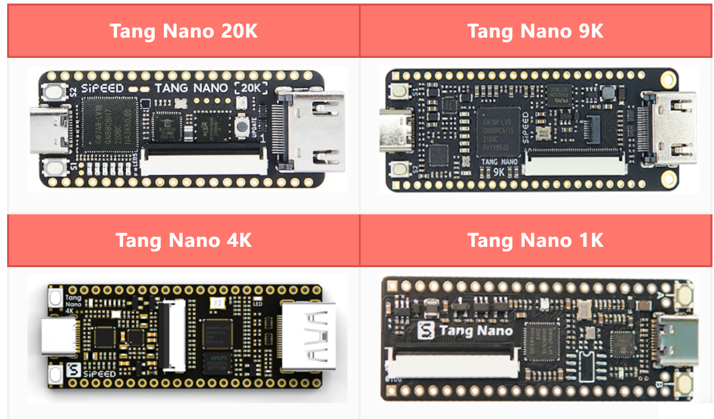

การใช้งานซอฟต์แวร์ Open Source FPGA Design Tools สำหรับบอร์ด Sipeed Tang Nano#
Keywords: Gowin FPGA, Sipeed Tang Nano
▷ ซอฟต์แวร์ Gowin EDA สำหรับบอร์ด Sipeed Tang Nano#
บอร์ด Sipeed Tang Nano เป็นบอร์ดที่มีชิป FPGA ของบริษัท Gowin Semiconductor และมีบอร์ดให้เลือกใช้หลายรุ่น เช่น Sipeed Tang Nano 1K / 4K / 9K / 20K และ Tang Primer 20K (โดยเรียงตามความจุเชิงลอจิกจากน้อยไปมาก)

รูป: Gowin FPGA Design Flow (Source: Gowin Semiconductor)

รูป: ตัวอย่างบอร์ด Tang Nano Series: 1K / 4K / 9K / 20K (Source: Sipeed)
บอร์ด Sipeed Tang Nano: FPGA Device / Package
tangnano: GW1N-LV1 / QN48tangnano1k: GW1NZ-LV1 / QN48C6/I5tangnano4k: GW1NSR-L4 / QN48tangnano9k: GW1NR-LV9 / QN88PC6/I5tangnano20k: GW2AR-LV18 / QN88tangprimer20k: GW2A-LV18 / BGA256C8/I7
โดยปรกติแล้ว การออกแบบวงจรดิจิทัลสำหรับการนำไปใช้กับชิป FPGA ของบริษัท Gowin จะต้องใช้ซอฟต์แวร์ของบริษัทผู้ผลิต ซึ่งในกรณีนี้ก็คือ ซอฟต์แวร์ Gowin (EDA) IDE (สำหรับระบบปฏิบัติการ Windows และ Linux) แบ่งเป็น 2 เวอร์ชัน ได้แก่ Gowin Standard Edition และ Gowin Education Edition (ตัวอย่างการใช้งานซอฟต์แวร์ Gowin สามารถศึกษาได้จากบทความนี้ "การใช้งานซอฟต์แวร์ Gowin IDE Standard Edition สำหรับบอร์ด Sipeed Tang Nano")
แต่ในบทความนี้ จะนำเสนออีกทางเลือกหนึ่งคือ การใช้งานซอฟต์แวร์ประเภท Open Source FPGA Design Tools แบบ Command Line และจะทดลองใช้งานสำหรับระบบปฏิบัติการ Linux
▷ ซอฟต์แวร์ Open Source FPGA Design Tools#
ในช่วงหลายปีที่ผ่านมา ได้มีการพัฒนาซอฟต์แวร์ประเภท FOSS (Free and Open-Source Software) สำหรับ FPGA Design Toolchain ยกตัวอย่างโครงการ SymbiFlow / F4PGA ("FOSS Flows For FPGA") Project (https://f4pga.org/, https://github.com/F4PGA/) ซึ่งเป็นกลุ่มทำงาน (Workgroup) ภายใต้ CHIPS (Common Hardware for Interfaces, Processors and Systems) Alliance
ซอฟต์แวร์ Open Source FPGA Toolchains นำมาทดลองใช้กับชิป Commercial FPGAs ได้สำเร็จ
- Lattice ECP5: Project Trellis
- Lattice iCE40: Project IceStorm
- QuickLogic EOS S3: QuickLogic FPGA Toolchain
- Xilinx 7-Series (Artix, Kintex, Zynq): Project X-Ray
- Gowin LittleBee Series: Project Apicula

รูป: ซอฟต์แวร์ Open Source FPGA Toolchains (Source: SymbiFlow / F4PGA)
ซอฟต์แวร์ที่จะนำมาใช้งานในการออกแบบวงจรดิจิทัลสำหรับชิป Gowin FPGA หรือ บอร์ด Sipeed Tang Nano ประกอบไปด้วยโปรแกรมดังนี้ (ตามลำดับการใช้งานใน FPGA Design Flow)
yosys+ghdl-yosys-plugin: ใช้สำหรับการสังเคราะห์วงจรดิจิทัล (Logic Synthesis) หรือแปลงโค้ดในภาษา Verilog & VHDL ในระดับ RTL (Register Transfer Level) ให้เป็นวงจรในระดับลอจิกเกต (Gate Level Netlist)nextpnr: ใช้ในการทำขั้นตอน FPGA Placement and Routingapicula: ใช้ในการสร้างไฟล์ Bitstream สำหรับชิป Gowin FPGAopenFPGALoader: ใช้สำหรับการอัปโหลดไฟล์ "บิตสตรีม" ไปยังบอร์ด FPGA ด้วยวิธี JTAG
แนะนำให้ผู้ใช้ติดตั้งและใช้งานโปรแกรมเหล่านี้กับระบบปฏิบัติการ Linux และผู้ใช้สามารถเลือกใช้งานได้หลายวิธี เช่น
- การติดตั้งและใช้งาน Ubuntu Virtual Machine (VM) โดยใช้ร่วมกับซอฟต์แวร์ Oracle VirtualBox สำหรับผู้ใช้ Windows หรือ
- การติดตั้งและใช้งาน WSL2 - Ubuntu สำหรับผู้ใช้ Windows 10 / 11 หรือ
- การติดตั้งและใช้งาน Raspbian OS (64-bit) ร่วมกับบอร์ด Raspberry Pi 4 Model B
▷ การติดตั้งโปรแกรมของ Yosys Project#
การติดตั้งโปรแกรม Yosys Open SYnthesis Suite สำหรับ Ubuntu 22.04 LTS มีขั้นตอนในการทำคำสั่งดังนี้
## Build the Yosys project from source.
# Install all prerequisites for building yosys on Ubuntu 22.04 LTS.
$ sudo apt install build-essential clang bison flex \
libreadline-dev gawk tcl-dev libffi-dev git \
graphviz xdot pkg-config python3 zlib1g-dev \
libboost-dev libboost-system-dev libboost-program-options-dev \
libboost-python-dev libboost-filesystem-dev \
libboost-thread-dev libboost-iostreams-dev
# Clone the git repository of yosys into the ~/Tools directory.
$ mkdir -p ~/Tools && cd ~/Tools
$ git clone https://github.com/YosysHQ/yosys.git
# Configure the build system and use clang as the compiler.
$ cd yosys
$ make config-clang
$ mkdir -p build && cd build
$ make -j $(nproc) -f ../Makefile
# Install the yosys program files.
# The default installation directory is /usr/local/.
$ sudo make install -f ../Makefile
เมื่อทำขั้นตอนติดตั้งได้สำเร็จแล้ว ให้ลองทำคำสั่งเพื่อเรียกใช้โปรแกรมดังกล่าว เช่น ตรวจสอบดูเวอร์ชันของโปรแกรม
(เวอร์ชันที่ได้ทดลองใช้ในบทความนี้คือ Yosys 0.31+45)
# Show the version of the installed yosys program.
# On Ubuntu 22.04
$ ./yosys --version
Yosys 0.31+45 (git sha1 f37ce5c83, clang 14.0.0-1ubuntu1.1)
▷ การติดตั้งโปรแกรม GHDL และ GHDL-Yosys Plugin#
การติดตั้งโปรแกรม GHDL สำหรับ Ubuntu 22.04 LTS มีขั้นตอนการทำคำสั่งดังนี้
## Build the GHDL from source.
$ mkdir -p ~/Tools && cd ~/Tools
# Install prerequisites.
$ sudo apt install -y git make gnat zlib1g-dev clang llvm
# Clone the GHDL repository from github.
$ git clone https://github.com/ghdl/ghdl.git
$ cd ghdl
$ export LDFLAGS="-Wl,--copy-dt-needed-entries -ldl"
# Run the configure command to configure and prepare
# software source code for compilation.
$ ./configure --with-llvm-config --enable-libghdl
# Run the make command to build the the GHDL program.
$ make -j $(nproc)
# Install the GHDL program.
$ sudo make install
# Update the cache database of shared libraries.
$ sudo ldconfig
เมื่อทำขั้นตอนติดตั้งได้สำเร็จแล้ว ให้ลองทำคำสั่ง เช่น เพื่อตรวจสอบดูเวอร์ชันของโปรแกรม
(เวอร์ชันที่ได้ทดลองใช้ในบทความนี้คือ GHDL 4.0.0-dev)
# On Ubuntu 22.04
$ ghdl --version | head -n 4
GHDL 4.0.0-dev (3.0.0.r340.g664bf403b) [Dunoon edition]
Compiled with GNAT Version: 10.5.0
llvm 14.0.0 code generator
Written by Tristan Gingold.
# Show the locations of the GHDL shared libraries
$ ls -c1 /usr/local/lib/libghdl*.so
/usr/local/lib/libghdl-4_0_0_dev.so
/usr/local/lib/libghdlvpi.so
ถัดไปให้ทำขั้นตอนการติดตั้งโปรแกรม GHDL-Yosys Plugin สำหรับ Ubuntu 22.04 LTS ซึ่งคำสั่งดังนี้
## Build the GHDL-Yosys Plugin from Source
$ mkdir -p ~/Tools && cd ~/Tools
$ git clone https://github.com/ghdl/ghdl-yosys-plugin.git
$ cd ghdl-yosys-plugin
$ make -j $(nproc)
$ sudo make install
# yosys-config --exec mkdir -p /usr/local/share/yosys/plugins
# yosys-config --exec cp ghdl.so /usr/local/share/yosys/plugins
$ sudo ldconfig
▷ การติดตั้งโปรแกรมของ Apicula Project#
การติดตั้งโปรแกรม Apycula (Python-based) สำหรับ Ubuntu 22.04 LTS มีขั้นตอนในการทำคำสั่งดังนี้ (ในบทความนี้ได้เจาะจงใช้เวอร์ชัน Apycula v0.8.2 ซึ่งเป็นเวอร์ชันล่าสุดในขณะที่ได้ลองใช้งาน)
# Install the Apycula Python packages
$ sudo apt install python3-pip
$ pip3 install apycula==0.8.2
$ export PATH=$HOME/.local/bin:$PATH
ให้เพิ่มบรรทัดต่อไปนี้ ลงในไฟล์ ~/.bashrc โดยทำคำสั่งต่อไปนี้
echo 'PATH="$HOME/.local/bin/:$PATH"' >> ~/.bashrc
โปรแกรมที่มีชื่อว่า gowin_bba เป็นส่วนหนึ่งของโปรแกรม Apycula และได้มีการติดตั้งไว้ภายใต้
$HOME/.local/bin จะถูกนำไปใช้ร่วมกับโปรแกรมของ Nextpnr Project
ซึ่งจะต้องมีการติดตั้งในระบบเป็นลำดับถัดไป
โปรแกรม Apycula รองรับการใช้งานชิปของ Gowin FPGA และบอร์ด Sipeed Tang FPGA เช่น
- Sipeed Tang Nano: GW1N-LV1QN48C6/I5
- Sipeed Tang Nano 1K: GW1NZ-LV1QN48C6/I5
- Sipeed Tang Nano 4K: GW1NSR-LV4CQN48PC7/I6
- Sipeed Tang Nano 9K: GW1NR-LV9QN88PC6/I5
- Sipeed Tang Nano 20K: GW2A-LV18QN88C8/I7
▷ การติดตั้งโปรแกรมของ Nextpnr Project#
การติดตั้งโปรแกรม Nextpnr (Next-Generation Place & Route Tools)
สำหรับ Gowin FPGA (โปรแกรมมีชื่อว่า nextpnr-gowin) มีขั้นตอนในการทำคำสั่งดังนี้
## Build the Nextpnr project from Source.
# Install prerequisites.
$ sudo apt install -y cmake clang git clang-format python3-dev \
libboost-dev libboost-filesystem-dev \
libboost-thread-dev libboost-program-options-dev \
libboost-iostreams-dev libboost-dev libeigen3-dev
$ mkdir -p ~/Tools && cd ~/Tools
$ git clone https://github.com/YosysHQ/nextpnr.git
$ cd nextpnr
$ cmake . -DARCH=gowin \
-DGOWIN_BBA_EXECUTABLE=`which gowin_bba`
$ make -j $(nproc)
$ sudo make install
# Show the version of the installed nextpnr-gowin program.
$ nextpnr-gowin --version
"nextpnr-gowin" -- Next Generation Place and Route
(Version nextpnr-0.6-29-g54b20457)
▷ การติดตั้งโปรแกรมของ openFPGALoader Project#
การติดตั้งโปรแกรม openFPGALoader
(Universal Utility for Programming FPGA) ทำตามขั้นตอนที่มีการเขียนไว้ในเอกสาร
"openFPGALoader Installation - User Guide"
## Build the openFPGA project from source.
# Install prerequisites.
$ sudo apt install -y libftdi1-2 libftdi1-dev \
libhidapi-hidraw0 libhidapi-dev libudev-dev \
zlib1g-dev cmake pkg-config make g++
$ mkdir -p ~/Tools && cd ~/Tools
$ git clone https://github.com/trabucayre/openFPGALoader.git
$ cd openFPGALoader
$ mkdir -p build && cd build
$ cmake ../ && cmake --build .
$ sudo make install
เมื่อทำขั้นตอนติดตั้งได้สำเร็จแล้ว ให้ลองทำคำสั่ง เช่น เพื่อตรวจสอบดูเวอร์ชันของโปรแกรม
(เวอร์ชันที่ได้ทดลองใช้ในบทความนี้คือ openFPGALoader v0.11.0)
# Show the version of the installed openFPGALoader program.
$ openFPGALoader -V
openFPGALoader v0.11.0
ขั้นตอนถัดไปคือ การดาวน์โหลดและติดตั้งไฟล์ 99-openfpgaloader.rules สำหรับ Linux udev
# Download the 99-openfpgaloader.rules file
$ URL=https://github.com/trabucayre/openFPGALoader; \
URL=$URL/raw/master/99-openfpgaloader.rules; \
wget -N $URL -O 99-openfpgaloader.rules
$ sudo cp ./99-openfpgaloader.rules /etc/udev/rules.d/
# Reload and update the udev rules
$ sudo udevadm control --reload-rules && \
sudo udevadm trigger
# Add the current user to the 'plugdev' group
$ sudo usermod -a $USER -G plugdev
▷ การทดลองโดยใช้บอร์ด Sipeed Tang Nano 1K#
บอร์ด Sipeed Tang Nano 1K มีชิป Gowin FPGA รุ่น GW1NZ-LV1-QN48C6/I5 ในตัวอย่างโค้ด VHDL ต่อไปนี้ จะสาธิตการใช้งานวงจรปุ่มกดและวงจร RGB LED บนบอร์ด Tang Nano 1K โดยใช้สัญญาณ Clock ความถี่ 27MHz จากวงจร Crystal Oscillator บนบอร์ดดังกล่าว สำหรับกำหนดจังหวะการทำงานของวงจรดิจิทัล
- SYS_CLK (3.3V): Pin 47 / IOT10A
- KEY_A (Active-low, 3.3V): Pin 13 / IOT12B
- RGB LED (Active-low, 3.3V):
- LED_R: Pin 09 / IOR2A
- LED_G: Pin 11 / IOR3A
- LED_B: Pin 10 / IOR3B
รูป: บอร์ด Tang Nano 1K ที่ได้นำมาทดลองใช้งาน
ไฟล์ที่ใช้ในการทดลอง มี 3 ไฟล์
leds_running.vhd: VHDL Source Codeleds_running.cst: Gowin Physical Constraint File (for GW1NZ-LV1QN48C6/I5)Makefile: ใช้สำหรับการทำคำสั่งmakeเพื่อทำขั้นตอนต่าง ๆ ของ FPGA Design Flow
File: leds_running.vhd
------------------------------------------------------------------
library ieee;
use ieee.std_logic_1164.all;
use ieee.numeric_std.all;
------------------------------------------------------------------
entity LEDS_RUNNING is
generic (
CLK_HZ : natural := 27000000;
NUM_LEDS : natural := 3
);
port(
CLK : in std_logic; -- system clock
nRST : in std_logic; -- global asynchronous reset (active-low)
LEDS : out std_logic_vector(NUM_LEDS-1 downto 0) -- LED Pins
);
end LEDS_RUNNING;
architecture SYNTH of LEDS_RUNNING is
constant COUNT_PERIOD : integer := CLK_HZ/10;
subtype count_t is integer range 0 to (COUNT_PERIOD-1);
signal count : count_t := 0;
signal leds_reg : std_logic_vector(NUM_LEDS-1 downto 0);
signal shift_en : std_logic;
begin
-- Use the register's bits (inverted) for LED outputs
LEDS <= not leds_reg;
process (nRST, CLK) begin
if nRST = '0' then
count <= 0;
shift_en <= '0';
elsif rising_edge(CLK) then
-- check whether the counter reaches the max. value.
if count = (COUNT_PERIOD-1) then
count <= 0; -- reset the counter.
shift_en <= '1'; -- enable register shift.
else
count <= count+1; -- increment counter by 1.
shift_en <= '0'; -- disable register shift.
end if;
end if;
end process;
process (nRST, CLK) begin
if nRST = '0' then
-- Initialize the LEDs register.
leds_reg(0) <= '1';
leds_reg(leds_reg'left downto 1) <= (others => '0');
elsif rising_edge(CLK) then
if shift_en='1' then -- Bit shifting is enabled.
-- Rotate-left shift.
leds_reg <= leds_reg(leds_reg'left-1 downto 0)
& leds_reg(leds_reg'left);
end if;
end if;
end process;
end SYNTH;
File: leds_running.cst (Gowin Physical Constraint File
for Tang Nano 9K Board)
//Part Number: GW1NZ-LV1QN48C6/I5
IO_LOC "CLK" 47;
IO_LOC "nRST" 13;
IO_LOC "LEDS[0]" 9;
IO_LOC "LEDS[1]" 11;
IO_LOC "LEDS[2]" 10;
IO_PORT "CLK" IO_TYPE=LVCMOS33;
IO_PORT "nRST" IO_TYPE=LVCMOS18 PULL_MODE=UP;
IO_PORT "LEDS[0]" IO_TYPE=LVCMOS33 DRIVE=8;
IO_PORT "LEDS[1]" IO_TYPE=LVCMOS33 DRIVE=8;
IO_PORT "LEDS[2]" IO_TYPE=LVCMOS33 DRIVE=8;
File: Makefile (for VHDL code)
############################################################
BOARD=tangnano1k
FAMILY=GW1NZ-1
DEVICE=GW1NZ-LV1QN48C6/I5
SRCS=$(wildcard *.vhd)
TOP=leds_running
# <target name>: <target dependencies>
# <tab> <target commands>
YOSYS_CMD=ghdl $(SRCS) -e $(TOP);
YOSYS_CMD+=synth_gowin -json synth.json
all: bitstream.fs
@echo "Done..."
# Logic Synthesis
synth.json: $(SRCS)
@echo "Starting the FPGA design flow..."
yosys -m ghdl -p '$(YOSYS_CMD)'
# Place & Route Step
pnr.json: synth.json
nextpnr-gowin \
--json synth.json \
--write pnr.json \
--device ${DEVICE} \
--family ${FAMILY} \
--cst ${TOP}.cst \
--freq 27
# Bitstream Generation
bitstream.fs: pnr.json
gowin_pack -d ${FAMILY} -o bitstream.fs pnr.json
# Device Programming: upload bitstream to on-chip SRAM
upload_sram: bitstream.fs
openFPGALoader -b ${BOARD} bitstream.fs
# Device Programming: upload bitstream to on-chip Flash
upload_flash: bitstream.fs
openFPGALoader -b ${BOARD} bitstream.fs -f
clean:
rm -f *.fs *.json *.cf *.o
# The following targets do not represent a file.
.PHONY: all clean upload_sram upload_flash
# The following files can be removed when finished.
.INTERMEDIATE: synth.json pnr.json
ตัวอย่างการทำคำสั่ง make โดยเรียกใช้ไฟล์ Makefile มีดังนี้

รูป: การทำคำสั่ง make และตัวอย่างข้อความเอาต์พุตบางส่วน
เมื่อทำคำสั่งได้สำเร็จ ก็จะได้ไฟล์ bitstream.fs ถ้าเชื่อมต่อบอร์ด
Tang Nano 1K กับพอร์ต USB ของเครื่องผู้ใช้ ก็สามารถทำคำสั่ง
เพื่ออัปโหลดไฟล์บิตสตรีมไปยังบอร์ด FPGA ได้ ซึ่งเป็นการเรียกใช้โปรแกรม
openFPGALoader
# upload bitstream to on-chip SRAM
$ make upload_sram
# or upload bitstream to embedded Configuration Flash
$ make upload_flash
คำแนะนำ: สำหรับผู้ใช้ WSL2 ร่วมกับ Ubuntu
ถ้าใช้ WSL Kernel ตั้งแต่เวอร์ชัน 5.10.60.1 เป็นต้นไป
ก็สามารถใช้โปรแกรมที่มีชื่อว่า usbipd (USB-over-IP Server Daemon)
เพื่อทำให้มองเห็นอุปกรณ์ USB ได้ใน WSL2-Ubuntu
แต่มีขั้นตอนที่จะต้องดำเนินการก่อนใช้งาน
ทำคำสั่งต่อไปนี้ใน WSL2 - Ubuntu Terminal เพื่อติดตั้งแพ็กเกจสำหรับ Ubuntu
$ sudo apt install -y linux-tools-virtual hwdata
$ sudo update-alternatives \
--install /usr/local/bin/usbip usbip \
`ls /usr/lib/linux-tools/*/usbip | tail -n1` 20
ถัดไปให้เปิดใช้งาน Windows PowerShell (Run in "Adminstrator Mode") ของ Windows 10 / 11 แล้วทำคำสั่งต่อไปนี้ เพื่อแสดงรายการอุปกรณ์ USB ที่มองเห็นได้ใน Windows และให้เชื่อมต่อบอร์ด Tang Nano กับพอร์ต USB ของคอมพิวเตอร์ผู้ใช้
## Powershell
# Show the version of usbpid.
> usbipd --version
# List all visible USB devices.
> usbipd wsl list
แล้วทำคำสั่งเพื่อเลือกใช้อุปกรณ์ตามรหัส VID:PID (ในกรณีของบอร์ด
Tang Nano คือ 0403:6010)
> usbipd wsl attach -i 0403:6010
จากนั้นให้ไปทำคำสั่งใน WSL2 - Ubuntu Terminal เพื่อตรวจสอบดูว่า
สามารถมองเห็นอุปกรณ์ USB ที่มีรหัส VID:PID ตรงกับ 0403:6010
หรือไม่
$ lsusb | sed -n 's/.*\(ID 0403\:6010\).*/\1/p'
ลองทำคำสั่ง openFPGALoader --detect --cable ft2232
เพื่อดูว่า สามารถเชื่อมต่อกับบอร์ด FPGA ได้หรือไม่
$ openFPGALoader --detect
Jtag frequency : requested 6.00MHz -> real 6.00MHz
index 0:
idcode 0x100681b
manufacturer Gowin
family GW1NZ
model GW1NZ-1
irlength 8
จากข้อความเอาต์พุต จะเห็นได้ว่า สามารถเชื่อมต่อกับบอร์ด FPGA ได้สำเร็จ
จากนั้นจึงทำคำสั่งเพื่ออัปโหลดไฟล์ "บิตสตรีม" ไปยังบอร์ดทดลอง
รูป: ตัวอย่างการทำคำสั่ง make เพื่ออัปโหลดไฟล์ "บิตสตรีม" ไปยังบอร์ดทดลอง
ซึ่งมีสองตัวเลือกคือ อัปโหลดไปยังหน่วยความจำ SRAM หรือ Flash
คำแนะนำ: สำหรับผู้ใช้ Oracle VirtualBox - Ubuntu VM
ในกรณีที่ใช้ Ubuntu Virtual Machine (VM) ร่วมกับ Oracle VirtualBox เมื่อเชื่อมต่อบอร์ด FPGA กับคอมพิวเตอร์ของผู้ใช้แล้ว จะต้องเพิ่มรายการอุปกรณ์ USB เพื่อให้สามารถเข้าถึงได้ใน Ubuntu VM
รูป: ตัวอย่างการเพิ่มรายการอุปกรณ์ USB: Sipeed JTAG Debugger
รูป: ตัวอย่างการทำคำสั่ง openFPGALoader ภายใต้ Ubuntu VM
▷ การทดลองโดยใช้บอร์ด Sipeed Tang Nano 9K#
ถัดไปเป็นการทดลองโค้ด Verilog HDL (Verilog-2005) เพื่อนำไปทดลองใช้กับบอร์ด Tang Nano 9K ซึ่งใช้ชิป GW1NR-LV9QN88PC6/I5 ใช้สัญญาณ Clock ความถี่ 27MHz จากวงจร Crystal Oscillator บนบอร์ด
- Onboard Push Button (Active-low, 1.8V):
- KEY_A: Pin 4 / IOT5A
- Onboard 6x LED (Active-low, 1.8V):
- LED1: Pin 10 / IOL15A
- LED2: Pin 11 / IOL16B
- LED3: Pin 13 / IOL21B
- LED4: Pin 14 / IOL22B
- LED5: Pin 15 / IOL25B
- LED6: Pin 16 / IOL26B
- Onboard Clock (3.3V): 27MHz
- SYS_CLK: Pin 52 / IOR17A
รูป: บอร์ด Tang Nano 9K ที่ได้นำมาทดลองใช้งาน
ไฟล์ที่ใช้ในการทดลอง มี 3 ไฟล์
leds_running.v: Verilog-HDL Source Codeleds_running.cst: Gowin Physical Constraint File (for GW1NR-LV9QN88PC6/I5)Makefile: ใช้สำหรับการทำคำสั่งmakeเพื่อทำขั้นตอนต่าง ๆ ของ FPGA Design Flow
File: leds_running.v
module leds_running #(
parameter CLK_HZ = 27000000,
parameter NUM_LEDS = 6
)(
input wire CLK, // system clock
input wire nRST, // global asynchronous reset (active-low)
output wire [NUM_LEDS-1:0] LEDS // LED Pins
);
localparam COUNT_PERIOD = (CLK_HZ / 10);
localparam COUNT_MIN = 0;
localparam COUNT_MAX = COUNT_PERIOD - 1;
reg [31:0] count = COUNT_MIN;
reg [NUM_LEDS-1:0] leds_reg = 1;
reg shift_en = 0;
reg shift_dir = 0;
wire shift_reverse;
always @(posedge CLK or negedge nRST) begin
if (nRST == 1'b0) begin
count <= COUNT_MIN;
shift_en <= 1'b0;
end
else begin
if (count == COUNT_MAX) begin
count <= COUNT_MIN;
shift_en <= 1'b1;
end
else begin
count <= count + 1;
shift_en <= 1'b0;
end
end
end
always @(shift_dir or leds_reg) begin
if ( (!shift_dir && leds_reg[NUM_LEDS-1])
|| ( shift_dir && leds_reg[0]) )
shift_reverse <= 1'b1;
else
shift_reverse <= 1'b0;
end
always @(posedge CLK or negedge nRST) begin
if (nRST == 1'b0) begin
shift_dir <= 1'b0;
leds_reg[0] <= 1'b1;
leds_reg[NUM_LEDS-1:1] <= {NUM_LEDS-1{1'b0}};
end
else begin
if (shift_en == 1'b1) begin // Bit shifting is enabled.
if (shift_reverse) // Reverse shifting direction
shift_dir <= !shift_dir;
else begin
if (!shift_dir) // Shift-left operation
leds_reg <= {leds_reg[NUM_LEDS-2:0],1'b0};
else // Shift-right operation
leds_reg <= {1'b0,leds_reg[NUM_LEDS-1:1]};
end
end
end
end
assign LEDS = ~leds_reg;
endmodule
File: leds_running.cst (for Tang Nano 9K Board)
//Part Number: GW1NR-LV9QN88PC6/I5
IO_LOC "CLK" 52;
IO_LOC "nRST" 4;
IO_LOC "LEDS[0]" 10;
IO_LOC "LEDS[1]" 11;
IO_LOC "LEDS[2]" 13;
IO_LOC "LEDS[3]" 14;
IO_LOC "LEDS[4]" 15;
IO_LOC "LEDS[5]" 16;
IO_PORT "CLK" IO_TYPE=LVCMOS33;
IO_PORT "nRST" IO_TYPE=LVCMOS18 PULL_MODE=UP;
IO_PORT "LEDS[0]" IO_TYPE=LVCMOS18 DRIVE=8;
IO_PORT "LEDS[1]" IO_TYPE=LVCMOS18 DRIVE=8;
IO_PORT "leds[2]" IO_TYPE=LVCMOS18 DRIVE=8;
IO_PORT "leds[3]" IO_TYPE=LVCMOS18 DRIVE=8;
IO_PORT "leds[4]" IO_TYPE=LVCMOS18 DRIVE=8;
IO_PORT "leds[5]" IO_TYPE=LVCMOS18 DRIVE=8;
File: Makefile (for Verilog Code)
############################################################
BOARD=tangnano9k
FAMILY=GW1N-9C
DEVICE=GW1NR-LV9QN88PC6/I5
SRCS=$(wildcard *.v)
TOP=leds_running
# <target name>: <target dependencies>
# <tab> <target commands>
YOSYS_CMD=read_verilog $(SRCS);
YOSYS_CMD+=synth_gowin -top ${TOP} -json synth.json
all: bitstream.fs
@echo "Done..."
# Logic Synthesis
synth.json: $(SRCS)
@echo "Starting the FPGA design flow..."
yosys -p '$(YOSYS_CMD)'
# Place & Route Step
pnr.json: synth.json
nextpnr-gowin \
--json synth.json \
--write pnr.json \
--device ${DEVICE} \
--family ${FAMILY} \
--cst ${TOP}.cst \
--freq 27
# Bitstream Generation
bitstream.fs: pnr.json
gowin_pack -d ${FAMILY} -o bitstream.fs pnr.json
# Device Programming: upload bitstream to on-chip SRAM
upload_sram: bitstream.fs
openFPGALoader -b ${BOARD} bitstream.fs
# Device Programming: upload bitstream to on-chip Flash
upload_flash: bitstream.fs
openFPGALoader -b ${BOARD} bitstream.fs -f
clean:
rm -f *.fs *.json *.cf *.o
# The following targets do not represent a file.
.PHONY: all clean upload_sram upload_flash
# The following files can be removed when finished.
.INTERMEDIATE: synth.json pnr.json
ลองทำคำสั่ง openFPAGLoader
เพื่อตรวจสอบดูว่า สามารถมองเห็นบอร์ด Tang Nano 9K หรือไม่
$ openFPGALoader --detect --cable ft2232
Jtag frequency : requested 6.00MHz -> real 6.00MHz
index 0:
idcode 0x100481b
manufacturer Gowin
family GW1N
model GW1N(R)-9C
irlength 8
รูป: ตัวอย่างการทำคำสั่ง make เพื่ออัปโหลดไฟล์บิตสตรีมไปยังบอร์ด Tang Nano 9K
รูป: ตัวอย่างการทำคำสั่ง make ภายใต้ Ubuntu VM
▷ แหล่งข้อมูลอ้างอิงและศึกษาเพิ่มเติม#
- https://wiki.sipeed.com/hardware/en/tang/
- https://github.com/YosysHQ/yosys
- https://github.com/YosysHQ/nextpnr
- https://github.com/YosysHQ/apicula
- https://github.com/ghdl/ghdl
- https://github.com/ghdl/ghdl-yosys-plugin
- https://github.com/trabucayre/openFPGALoader
- https://trabucayre.github.io/openFPGALoader/vendors/gowin.html
▷ กล่าวสรุป#
บทความนี้ได้นำเสนอซอฟต์แวร์ประเภท Open Source FPGA Toolchain ที่สามารถนำมาใช้งานกับบอร์ด Sipeed Tang FPGA ได้หลายรุ่น และมีการสาธิตการติดตั้งและใช้งานสำหรับระบบปฏิบัติการ Linux / Ubuntu 22.04 พร้อมตัวอย่างโค้ด VHDL และ Verilog เพื่อการทดลองใช้งานในเบื้องต้น ดังนั้นการใช้ซอฟต์แวร์ประเภทนี้ จึงเป็นอีกทางเลือกหนึ่งนอกเหนือจากการใช้ซอฟต์แวร์ Gowin EDA
This work is licensed under a Creative Commons Attribution-ShareAlike 4.0 International License.
Created: 2023-08-04 | Last Updated: 2023-08-07